LLM OS
LLM OS Version 0.4.2 · September 2026 · release notes
An operating system with no apps until you ask for one.
You describe a program. LLM OS writes it, checks it, sandboxes it and runs it — and rewrites it when you want something changed or it crashes.
It tells you what’s running, and it keeps what you made.
A boot screen that lists the services and what to do when one is missing, user data that survives upgrades and hard power-offs — and a security review of the whole sandbox boundary, with every finding fixed.
- new
A boot screen, and a list of what’s running.
Your data, AI models, apps, sandbox, background apps, self-improvement — each with its state and, when something is missing, the one thing to do about it.
/statusshows it again; the VM console prints the same list, systemd-style. - new
Move an older install’s data to its own disk.
llmos-data-movecopies apps, files and settings from a 0.4.0 VM to the data disk, so the next upgrade is a disk swap. A data disk attached to a running install is filled automatically on the next boot. - fix
Settings and app data survive a hard power-off.
Found by booting the released image: files written in the last ~30 seconds came back empty after a VM was stopped. Every write of your data is now flushed to disk before it counts as saved, and the VMs power off cleanly when the hypervisor asks them to.
- fix
The Server and Desktop images boot again.
The 0.4.1 images stopped at the bootloader. Every image is now booted in CI before it is released — with a data disk, a shutdown from the hypervisor, and an upgrade that must keep your data.
- change
Desktop layouts have neutral names.
/desktop taskbarand/desktop dock; the old names still work. Window buttons on the left have their own look. - security
An app can no longer hand its window to a web page.
A sandboxed app could navigate its own frame to any site, and the page there kept the app’s permissions. The browser now refuses such pages, and an app that tries is closed.
- security
Apps can’t impersonate the OS to each other, or inherit another app’s data.
One app could answer another app’s pending requests with fake data. And after a fresh browser profile, a new app could get the private storage of an old one.
- security
Permission prompts can’t be ambushed.
An app could time a permission request to catch your next Enter key. Prompts now default to “no”, “Allow” unlocks after a moment, a “no” is remembered, and taking a permission away takes effect at once.
- security
Websites can’t crash or frame the OS; apps can’t reach your network through IPv6 tricks.
Plus: stricter checks on apps from the community registry, which is no longer contacted at startup unless you turn it on.
- 0.4.1
Your data on its own disk, and upgrades that keep your changes.
- new
A separate data disk for the VMs.
Apps, files and settings live on
llmos-data; upgrading means replacing the OS disk. - new
Your version of an app wins.
When a new release ships a newer built-in app, the one you changed is still the one that opens.
- new
Upgrade an app with a bigger model.
⇪ in the title bar or Ctrl+Alt+U: pick any installed or cloud model and let it improve the running app.
- 0.4.0
A generated desktop, and a first step out of the browser.
- new
Describe your desktop.
/desktop taskbar,/desktop dock, or any description: a taskbar at the bottom (Windows-like) or a menu bar with a dock (Mac-like), dock position, clock, window buttons, wallpaper. The model proposes a layout, the kernel validates every field. Pinned apps that don’t exist yet are written the first time you click them. - new
A Prompt button instead of a Start menu.
Search your apps or describe a new one from the same box. Also on the Super/Windows key and Ctrl+Space.
- new
Alt+Tab window switcher.
Works in kiosk mode and on the native renderer; in a normal browser, where the host OS keeps Alt+Tab, use Alt+` instead. Shortcuts work even while an app has focus.
- new
Terminal, Writer and Reader.
A shell for the OS itself (files, network, the model), a word processor that saves HTML documents, and a reader-mode browser that shows pages without scripts, trackers or cookies.
- new
Portable UI.
Apps can describe their interface as plain data — columns, rows, text, buttons, inputs — instead of HTML. The browser renders it today; the same tree can be drawn by anything. Terminal and Tasks are written this way.
- new
Native renderer (spike).
A 1.4 MB Rust binary lays out and draws portable apps in Full HD in about 2 ms, to a PNG or a Linux framebuffer. No input and no app logic yet — but the layout already matches the browser.
- 0.3.0
Apps that work together, change and heal themselves.
- new
Watch the app being written.
Generation streams from every provider. A preview renders the half-finished app as the code arrives — with scripts disabled, since nothing runs before the analyzer and your approval.
- new
Modify a running app from its title bar.
Describe the change; the model rewrites the app and it is swapped into the same window with its data intact. Every version is kept in the registry with its parent.
- new
Self-healing.
Runtime errors are captured inside the sandbox and shown on the window. One click sends the code and the errors back for a fix.
- new
Shared filesystem and file associations.
Apps declare which file types they handle. Opening a file launches the right app — or, if none exists, offers to write one.
- new
Apps can use the model.
LLMOS.ai.complete()behind theai:generatecapability, rate-limited per app. - new
Network proxy, clipboard, inter-app messaging, runtime permission prompts.
- new
Describe a theme, get a theme.
/theme nordic winter nightasks the model for a palette. The kernel checks every value and the text contrast before applying it — too dark, and the model gets one try to fix it. Every running app re-themes at once. - new
Regenerate with today’s model.
Every generated app in the registry has a ↻ button that runs its original prompt again on the current model and stores the result as a new version.
- new
Two default apps: Files and Notepad.
Written by Claude Opus 5.5 against the new SDK. Files got its search box through the modify loop.
- models
Claude Opus 5 by default;
"… using opus 5.5","… with fable"as prompt hints.Streaming generation, prompt caching, refusal fallback. Truncated output is detected instead of silently producing a broken app.
- security
The kernel API rejects cross-origin and DNS-rebinding requests.
Before this, any web page you visited could talk to
localhost:3000— including the Docker endpoints. - security
Capabilities are enforced on every call, twice.
Once in the shell for each message an app sends, and again in the kernel with a signed token. Registry apps that ask for files, network or AI need your approval.
What it looks like right now.
Real screenshots of the prototype, not mockups.
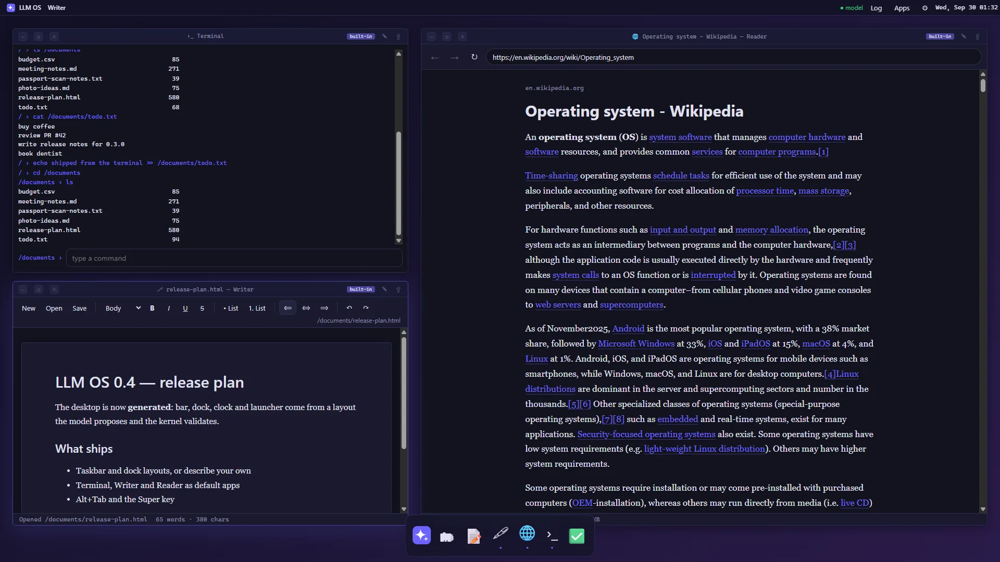
/desktop dock at 1920×1080: menu bar with the Prompt launcher, a dock with running-app dots, Terminal, Writer and Reader working on the same files.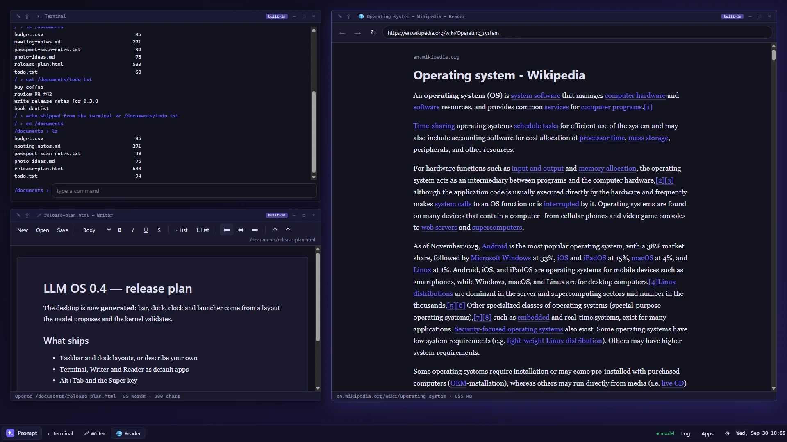
/desktop taskbar: a taskbar with the Prompt button, open windows, status and clock.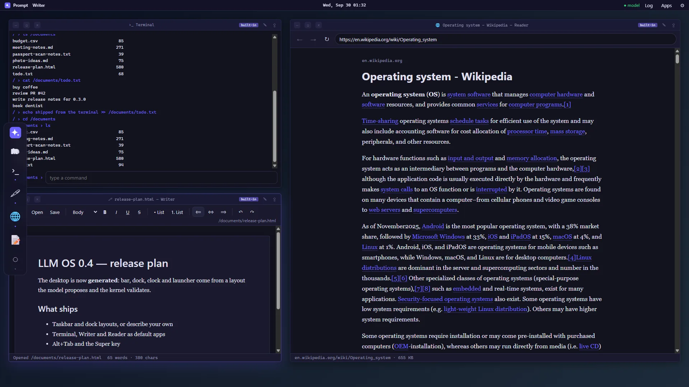
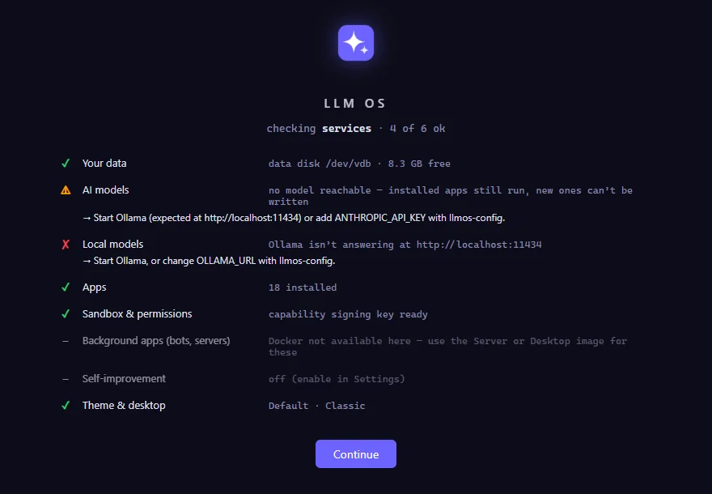
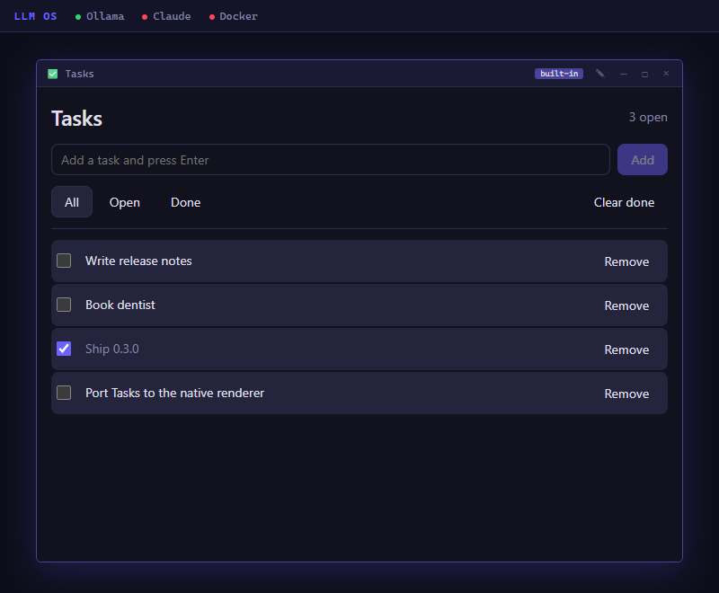
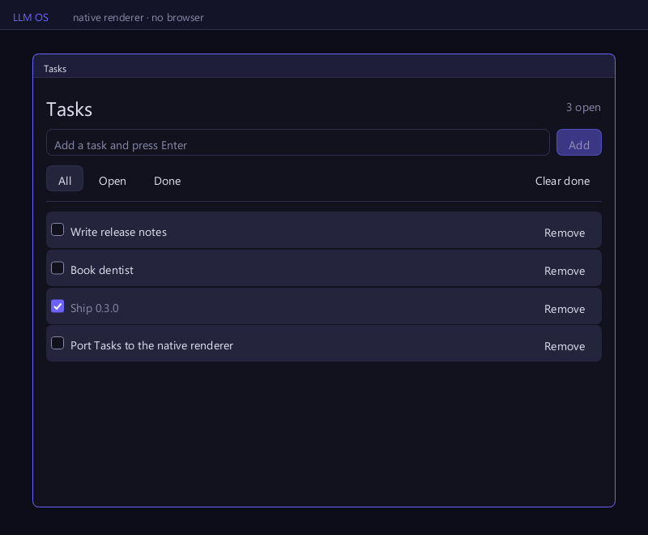
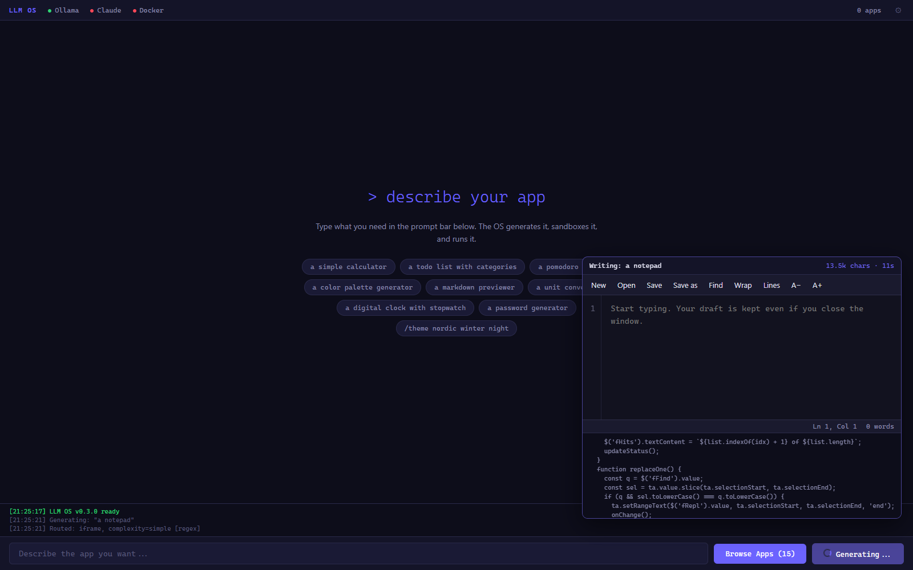
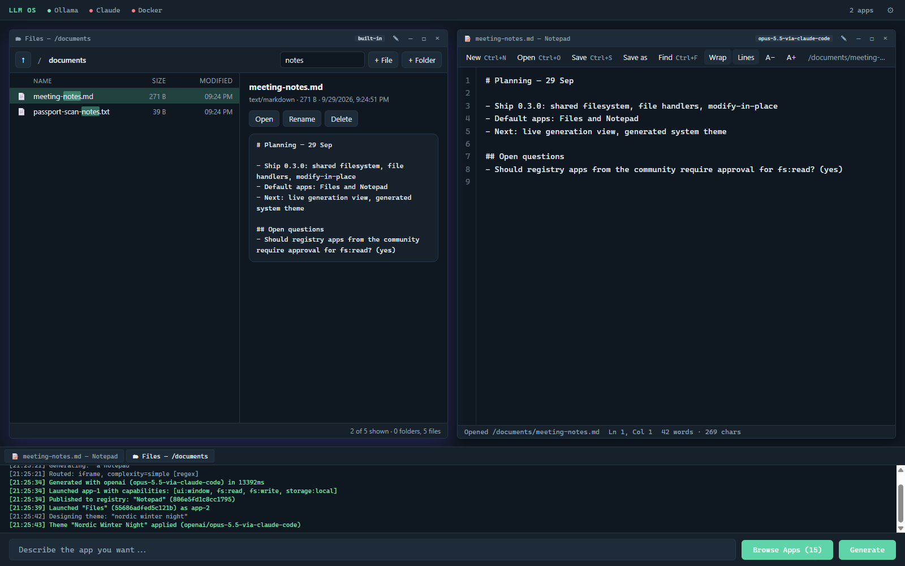
/theme nordic winter night — the shell and both running apps change together, without restarting anything.Same prompt, February and September.
“A notepad”, generated for LLM OS twice. The editor itself was already good in February. What changed is what an app is allowed to be part of.
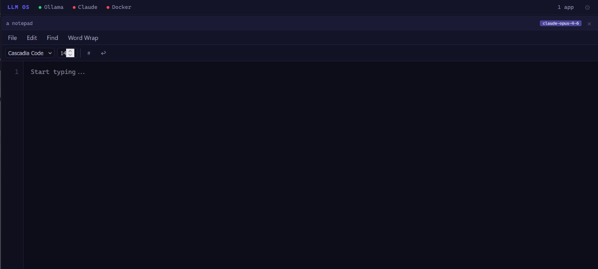
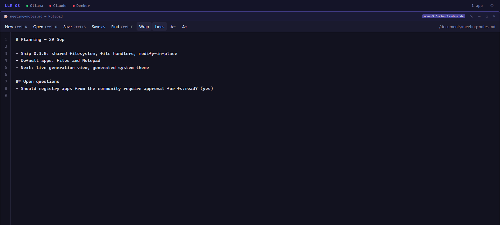
.txt, .md, .csv and friends, keeps an unsaved draft across restarts, and follows the system theme.Seven months and one model generation apart — and the newer model is cheaper to run. That is the point of building an OS this way: a normal program doesn’t get better when models do, but here an app is a prompt with a version history. Press ↻ on any app in the registry and it is written again by whatever model you have today, linked to the version it replaces.
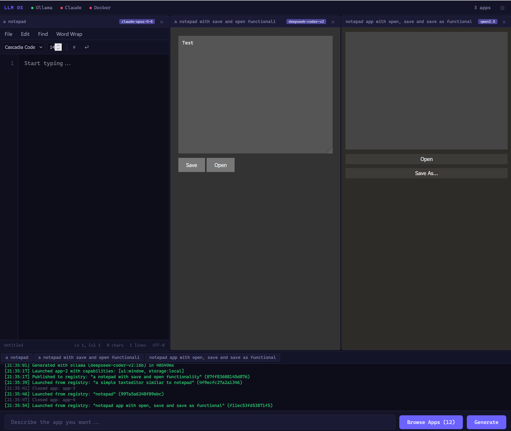
From a sentence to a running program.
The model writes the code. Everything that decides what the code is allowed to do is deterministic.
- You ask“A pomodoro timer that logs sessions to a file.” Add “using opus” to pick a model.
- A router classifies the requestSandboxed page or background process? A tiny local model decides; regex if there is none.
- The gateway picks a model and generatesOllama, Claude, OpenAI or any compatible endpoint. The strongest available model gets the hard requests.
- A static analyzer reads the resultNo LLM in this step.
eval, frame escapes, nested iframes and obfuscation are blocked. - You approve what it may doFiles, network, AI, clipboard — each is a capability you can untick.
- It runs in a sandboxAn iframe with no network and a strict CSP, a WASM worker, or a Docker container for services.
What a generated app can call.
Apps get no direct access to anything. Every service goes through one global object, and each one is tied to a capability the user granted.
| LLMOS.ui | Render elements, notifications, confirm dialogs. | ui:window |
| LLMOS.storage | Private key/value store for the app, kept across restarts and new versions. | storage:local |
| LLMOS.fs | The user’s files, shared by all apps. Read, write, list, stat, mkdir, remove. | fs:read · fs:write |
| LLMOS.os | Launch arguments, open a file in its handler app, set the window title. | — |
| LLMOS.ai | Ask the system’s language model. Lets an app summarise, translate, classify. | ai:generate |
| LLMOS.net | HTTP through the kernel. Public internet only; private and metadata addresses are refused. | network:http |
| LLMOS.ipc | Publish and subscribe between running apps. | ipc:bus |
| LLMOS.clipboard | Read and write the clipboard. | clipboard:rw |
| LLMOS.ui.app | Portable UI: state + a view built from components. Runs in the browser and on the native renderer. | ui:window |
| LLMOS.caps | Check or request a capability at runtime; the user gets a prompt. | — |
Assume the generated code is hostile.
A model can be prompt-injected, and it can simply write bad code. The design doesn’t rely on it behaving.
| Layer | What it stops |
|---|---|
| Prompt sanitizer | Known injection phrasing and hidden zero-width characters before anything reaches a model. |
| Static analyzer | ~35 deterministic rules: eval and friends, frame escapes, service workers, encoded payloads. |
| Iframe sandbox + CSP | No network, no same-origin, no external resources. The app can only post messages to the shell. |
| Shell syscall check | Every message is matched against the capabilities you approved, even if the app bypasses the SDK. |
| Kernel token check | File, network and AI calls also need an HMAC-signed capability token bound to that app. |
| API guard | Other websites and rebound DNS names cannot call the kernel on localhost. |
Found a way out of the sandbox? Please open an issue — it is the most useful thing anyone can contribute.
Local first, cloud when you want it.
Without any model the OS still boots and routes with regex. Add a small local model and it routes better; add a large one and it writes good apps offline.
| Provider | Typical use | Configure |
|---|---|---|
| Ollama | Offline generation with Qwen, DeepSeek Coder and others. Free. | OLLAMA_URL |
| Anthropic | Opus 5 by default; Opus 5.5, Sonnet, Haiku or Fable on request. | ANTHROPIC_API_KEY |
| OpenAI-compatible | OpenAI, OpenRouter, Groq, Together, vLLM, LM Studio. | OPENAI_BASE_URL |
Where this is going.
The long-term idea: the shell, the drivers and eventually the kernel are generated too, and the only thing that persists between boots is your data and your profile. That is years away. This is the near term.
done
- Bootable VM images
- Six-provider model gateway
- Capability tokens
- App registry with versions
- In-place modify and self-heal
- Shared files and file handlers
- Live generation view
- Generated system themes
- Generated desktop layouts
- Portable UI + native renderer spike
next
- Keyboard and mouse for the native renderer
- Run portable apps natively (QuickJS/WASM), no browser in the micro image
- Mail through a kernel IMAP/SMTP service
- Undo: roll an app back to any earlier version
- Evaluation suite for modify/fix quality across models
later
- Multi-file apps with a backend
- The whole shell as portable UI, drawn natively
- Change display resolution and scaling from the desktop
- Shell regenerated at boot from your profile
- WASM as the default app runtime
- Rust microkernel, UEFI boot
From source, or as a VM.
No npm dependencies. Node 20 or newer.
git clone https://github.com/DayZAnder/llm-os cd llm-os cp .env.example .env # set OLLAMA_URL and/or ANTHROPIC_API_KEY node src/server.js # http://localhost:3000 npm test # 604 tests
| Image | Contents | Size | Download |
|---|---|---|---|
| Micro | Buildroot, Node.js, Dropbear. Sandboxed apps only. | ~50 MB | qcow2 · vhdx · ova |
| Server | Alpine, Docker, Node.js. Adds background process apps. | ~700 MB | qcow2 · vhdx · ova |
| Desktop | Server plus a full-screen Chromium kiosk. | ~1 GB | qcow2 · vhdx · ova |
The VM images are from the v0.4.1 release. Attach llmos-data (vhdx, vmdk) as a second disk so your apps and files survive upgrades. Log in as root / llmos and change the password, then open http://<vm-ip>:3000. If you reach the VM by IP instead of a localhost port forward, add that address to LLMOS_ALLOWED_HOSTS. qcow2 for Proxmox/KVM, vhdx for Hyper-V, ova for VirtualBox/VMware. All releases · third-party licenses.
The four rules every change is checked against.
A deterministic scan in CI, a model review on pull requests, and a human with the final say.
- Protect the user first.No telemetry, no tracking. Apps are sandboxed; when in doubt, deny.
- Empower the user.No artificial limits or paywalls. Build whatever you need, as long as it doesn’t harm others.
- Take a piece, leave a piece.Use it freely. If it helps you, give something back.
- Nothing is perfect.Not these rules, not this code. Ship, learn, improve.